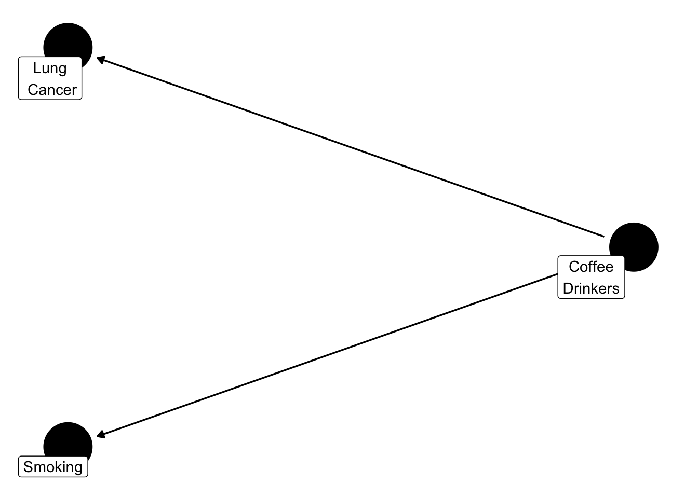

Background
I was first introduced to causal inference by Hernan and Robins (2021), in the summer of 2021 prior to starting my PhD. This book was tremendous and changed my thinking about “correlation doesn’t equal causation”.
From introductory science, as scientists, we are taught that correlation doesn’t equal causation. I had never questioned this until I was in my MSc program and started thinking about the association between lung cancer and smokers. Stellman et al. (2001) reported an odds ratio of 40.4 (95% CI: 21.8-79.6), which to me seemed high.
Now there are two ways to interpret this. On one hand, if we were a tobacco company we could argue that the 95% CI is pretty wide, indicating that the estimate is not that precise and the statistical method used must be wrong, etc (by etc, I mean whatever excuses you want to use). On the other hand, even at the lower limit an odds ratio of 21.8 is pretty damn high. In my opinion, this would require at the very least more investigation to determine “does smoking cause lung cancer?”
Common Ground
Prior to diving straight into the world of causal inference, we first need to set some common ground rules.
Note
Keep in mind causal inference is a broad field and will be the subject of many subsequent posts, this is just an introductory post or wetting your beak if you will.
Confound It!
In order to get to the bottom of “does X cause Y?” we need to outlined some key methodological concepts. First, we need to outline what confounding is and clearly define what we mean.
Different disciplines used different terminology, however confounding in clinical epidemiology refers to a variable that impacts both the exposure (i.e., smoking) and outcome (i.e., lung cancer). A useful way to visualize this is using directed acyclic graphs (DAGs). I’ll defer to Hernan and Robins (2021) for more detail about DAGs. However, the below illustrates what confounding is.
Figure 1 shows that coffee drinkers are associated with smoking. Logically, this makes sense because many smokers enjoy a cup of coffee with their cigarette. In fact, a lot of people enjoy coffee. A group of these people who are coffee lovers may also develop lung cancer. Based on this, you could say that people who drink coffee develop lung cancer. The question is, is this true? Or is it just that a lot of people like drinking coffee? Confounding bias, makes it difficult to tease out what coffee actually causes.
Randomized Controlled Trials (RCTs)
Randomized controlled trials are typically considered the gold standard in research. However, sometimes people forget why they are considered the gold standard. There are of course numerous reasons but I will touch on a few here. Firstly, an RCT is randomized meaning that patient’s are randomly assigned to one of the treatment arms. In theory, this is to ensure that characteristics are balanced between the treatment arms. By balancing characteristics, in theory, both observed and unobserved confounders are equal between the groups, making them exchangeable (aka equal).
Note
Random is important to note here. There are different methods which are truly random, such as a random number generator, while there are others that are not.
For example, if you were picking players for a baseball team and wanted to assign people to two teams, team A & team B, how would you do it? Based on the color shirt they are wearing, hair color, eye color? None of those methods would be random.
Another key strength of RCTs, is the nature of the intervention. For example, a well designed RCT will be very clear about what treatment is received by the participants.
Observational Data
Observational data in research often gets a bad wrap. The gold standard is randomized controlled trials (RCTs), however often times people forget why this is. RCTs provide
Assumptions Required for Causal Inference
Real-life is very complicated. For any method or analysis, such as designing a house, assumptions are required. This is is no different for causal inference. Key assumptions for causal inference include:
Exchangeability
Positivity
Consistency
No versions of treatment
No interference
Note
Collectively, consistency, no versions of treatment and no interference have been referred to as the stable-unit-treatment-value assumption (SUTVA) (Hernán 2012).
Let’s break down these assumptions down one by one.
Exchangeability
Remember confounding from earlier? Well that pesky bias is back again to haunt us.
Note
Recommend to pause here and re-read Section 2.1 if needed
The goal, although not always, of a lot of RCTs is to compare two treatments, for example drug A to placebo or to compare purple Popsicle eaters with water drinkers. An example always helps.
Let’s pretend we want to compare popsicle eaters with water drinkers, to see if there is a difference in who is hungrier. Conducting our very own RCT, we enroll 591
| Demographic Variable | Purple Popsicle Eaters (n = 250) |
Water Drinkers (n = 341) |
|---|---|---|
| Age, mean (SD) | 9.18 (3.39) | 42.58 (22.03) |
| Female, n (%) | 190 (76.0%) | 145 (42.5%) |
Positivity
Consistency
No Versions of Treatment
No Interference
When to use Cause
If these assumptions hold, then we can use the term cause!
References
Hernan, M. A., and J. M. Robins. 2021. “What If - Causal Inference.” Journal Article.
Hernán, Miguel A. 2012. “Beyond Exchangeability: The Other Conditions for Causal Inference in Medical Research.” Statistical Methods in Medical Research. Sage Publications Sage UK: London, England.
Stellman, S. D., T. Takezaki, L. Wang, Y. Chen, M. L. Citron, M. V. Djordjevic, S. Harlap, et al. 2001. “Smoking and Lung Cancer Risk in American and Japanese Men: An International Case-Control Study.” Journal Article. Cancer Epidemiol Biomarkers Prev 10 (11): 1193–99. https://www.ncbi.nlm.nih.gov/pubmed/11700268.